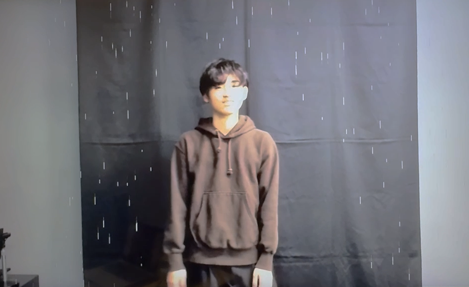

個人作品
「骨格認識デモ作品」
大学の卒業制作で,人そのものをインターフェースとして捉えるインタラクションのある作品を作りたいと考えたため、技術の向上を目的として製作しました。
骨格検出を行うAIのjsライブラリを使ってWeb上で動作するようにしました。
| ジャンル | インタラクティブアート |
|---|---|
| 制作期間 | 1ヶ月 |
| 使用技術 | ML5.js(TensorFlow),p5.js |
TensorFlow.js派生のml5.jsを使いAIで骨格を認識し、関節の位置をトラッキングすることで、関節の角度や高さを計測し、人間の動作を認識させます。p5.jsで動作に合わせたグラフィックスを表示しています。
カメラ内で人を認識すると雨が振り始め、
カメラで人を認識しなくなると雨はやみます。
左手を上げると雨から雪に変わり、
右手を上げると雪から雨に変わります。
